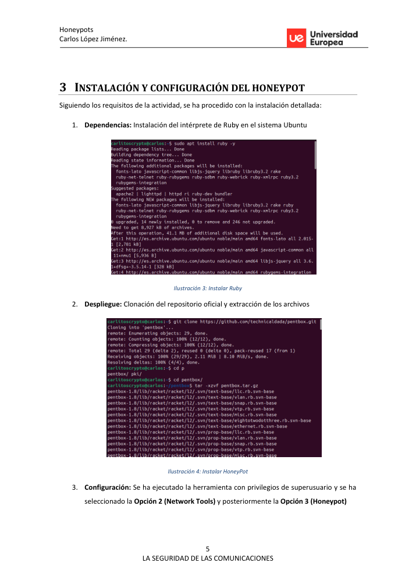
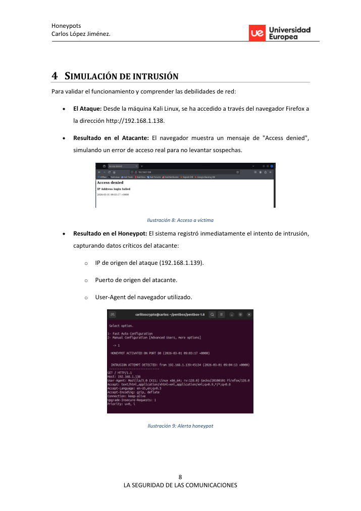

Executive summary
Se configura un honeypot de baja interacción con Pentbox para simular un servicio web y registrar intentos de acceso. El laboratorio permite observar cómo un señuelo puede detectar actividad de reconocimiento o intrusión en fases tempranas.
Lab path
El entorno utiliza una máquina atacante Kali y una máquina Ubuntu como honeypot, ambas en el mismo segmento. Tras instalar Ruby y desplegar Pentbox, se activa la configuración automática del honeypot en el puerto 80 y se simula un acceso desde el atacante.
Recruiter signal
Muestra sensibilidad defensiva y capacidad para diseñar laboratorios que explican detección, engaño y análisis de tráfico, competencias útiles para roles ofensivos y blue/purple team.
Command notebook
Comandos representativos del laboratorio. Los valores sensibles se han sustituido por placeholders.
sudo apt install ruby -y git clone <pentbox-repo> sudo ruby pentbox.rb # Network tools > Honeypot > Fast Auto Configuration curl http://<honeypot-ip>/
Pasos resumidos con evidencias
Objetivo del laboratorio
Implementar un honeypot de baja interacción para detectar accesos no autorizados.
Preparación de red
Modo puente y conectividad directa entre atacante y honeypot.

Instalación de Pentbox
Instalación de Ruby, despliegue de Pentbox y selección de Network Tools.

Servicio trampa
Fast Auto Configuration levanta un falso servicio HTTP en puerto 80.
Simulación de intrusión
Acceso desde Kali al servicio señuelo para disparar la alerta.
Registro de indicadores
Captura de IP origen, puerto y User-Agent del supuesto intruso.
Valor defensivo
Uso del honeypot como detección temprana y fuente de inteligencia interna.
Key findings
The honeypot registered source IP, source port and User-Agent.
Impacto técnico identificado y validado durante el laboratorio. En una evaluación real se priorizarÃa por criticidad, explotabilidad y alcance.
A low-value decoy can provide early warning inside a LAN.
Impacto técnico identificado y validado durante el laboratorio. En una evaluación real se priorizarÃa por criticidad, explotabilidad y alcance.
The service intentionally returns an access denied response to avoid exposing real assets.
Impacto técnico identificado y validado durante el laboratorio. En una evaluación real se priorizarÃa por criticidad, explotabilidad y alcance.
Visual evidence
Remediation notes
- Place honeypots in monitored segments.
- Forward logs to a SIEM.
- Use decoys as detection controls, not as a replacement for hardening.